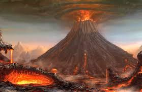
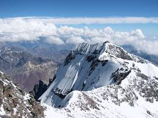

Fakta Gunung Toba
Danau Toba, yang panjangnya 100 kilometer dan lebarnya 30 kilometer, dikelilingi oleh batu apung peninggalan dari letusan gunung.
Karena itu, Van Bemmelen menyimpulkan, Toba adalah sebuah gunung berapi.
Belakangan, beberapa peneliti lain menemukan debu riolit (bahasa Inggris: rhyolite) yang seusia dengan batuan Toba di Malaysia, bahkan juga sejauh 3.000 kilometer ke utara hingga India Tengah.
Baca selengkapnya >>>>>>>

Gunung es di Indonesia
Pegunungan Jayawijaya adalah rangkaian pegunungan yang membujur di Provinsi Papua, Indonesia.
Pegunungan Jayawijaya adalah rangkaian pegunungan tertinggi di Indonesia, dengan puncak tertingginya yaitu Puncak Jaya (4.884 meter dari permukaan laut).
Baca selengkapnya >>>>>>>